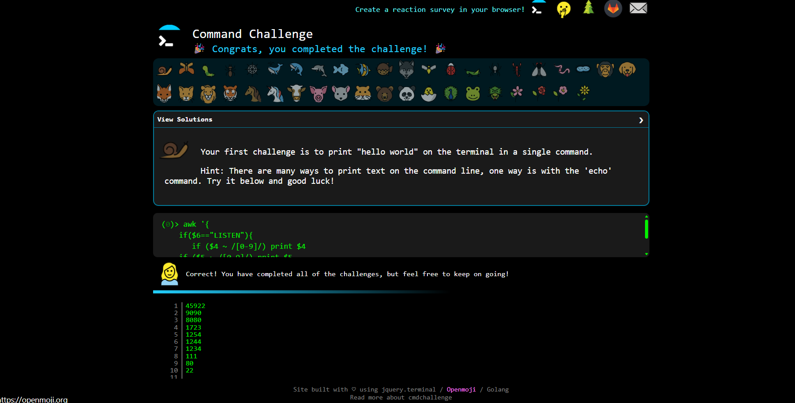
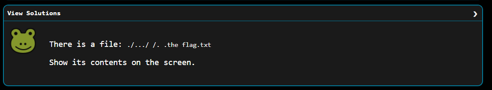

這題是考關於linux的路徑，當我看到的時候其實有點無從下手，但在查詢網路與詢問AI之後，
發現那三個點(...)可以當作合法的路徑顯示，並且這當中還有空白要使用反斜線去跳脫他，
這當中我也使用
ls -lab 指令來查看檔案的詳細資訊，把檔名中的特殊字元用 escape
形式顯示出來 因為檔案中有空白更容易辨認，最後我成功找到空白的地方， 並使用
cat "./.../ /. .the flag.txt" 解開這個題目。